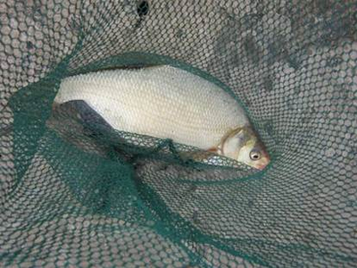
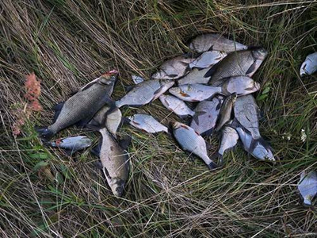

| Белуга | Краснопёрка | Селёдка |
| Белый амур | Лещ | Синец |
| Вобла | Линь | Стерлядь |
| Голавль | Осётр | Тарань |
| Густера | Плотва | Толстолоб |
| Карп | Подлещик | Чехонь |
| Карась | Сазан | Язь |
Ловля мирных рыб
 Большое количество рыболовов предпочитают ловить мирную рыбу. Причины очень просты. Видовое разнообразие мирных рыб не может не радовать. Тот же карась или плотва ловится чуть ли не круглый год и на разные насадки. Можно найти одно место и спокойно рыбачить все время, не бегая по разным местам. Ужение мирной рыбы подразумевает нахождение рыбака на одном месте. Насадка подается на дно или в толщу воды. Перед этим место закармливается. Далее идут забросы оснасток, и рыболов ждет поклевок рыбы с последующей подсечкой и вываживанием рыбы. Для ловли мирной рыбы годятся разные снасти, от простейших закидушек до современных карповиков и филеров. Ловля мирной рыбы достаточно демократична. Она доступна для самых маленьких и самых пожилых людей. Есть рыболовы, которые специализируются только на поплавочной ловле. Есть доночники, фидеристы и карпятники. Кто-то осваивает штекерную ловлю, а кто-то привык ловить только резинкой или с лодки бортовыми удочками. В ловле мирной рыбы нет правильных и неправильных способов. Все разрешенные способы интересны и могут приносить очень хорошие уловы и удовольствие от самого процесса.